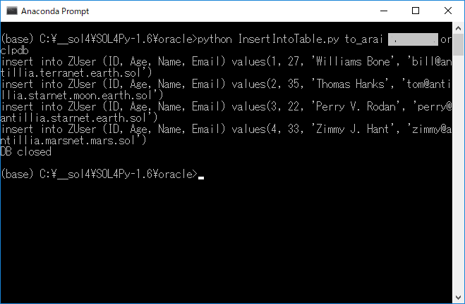

|
SOL4Py Sample: InsertIntoTable
|

#******************************************************************************
#
# Copyright (c) 2018-2019 Antillia.com TOSHIYUKI ARAI. ALL RIGHTS RESERVED.
#
# This program is free software: you can redistribute it and/or modify
# it under the terms of the GNU General Public License as published by
# the Free Software Foundation, either version 3 of the License, or
# (at your option) any later version.
#
# This program is distributed in the hope that it will be useful,
# but WITHOUT ANY WARRANTY; without even the implied warranty of
# MERCHANTABILITY or FITNESS FOR A PARTICULAR PURPOSE. See the
# GNU General Public License for more details.
#
# You should have received a copy of the GNU General Public License
# along with this program. If not, see <http://www.gnu.org/licenses/>.
#
#******************************************************************************
# encoding: utf-8
# InsertIntoTable.py
# 2018/09/30
"""
Create Table ZUser(
ID Number(6) not NULL primary key,
Name varchar2(255) not NULL,
Sex varchar2(10),
Age Number(4),
Birthday Date,
Email varchar2(255),
Telephone varchar2(128),
Address varchar2(255),
Company varchar2(255));
"""
import sys
import os
import configparser
sys.path.append('../')
from SOL4Py.ZMain import *
from SOL4Py.oracle.ZOracleDB import *
if main(__name__):
# user passwd service server port
db = ZOracleDB(argv=sys.argv)
try:
inserts = []
inserts.append("insert into ZUser (ID, Age, Name, Email) values(1, 27, 'Williams Bone', 'bill@antillia.terranet.earth.sol')")
inserts.append("insert into ZUser (ID, Age, Name, Email) values(2, 35, 'Thomas Hanks', 'tom@antillia.starnet.moon.earth.sol')")
inserts.append("insert into ZUser (ID, Age, Name, Email) values(3, 22, 'Perry V. Rodan', 'perry@antillia.starnet.earth.sol')")
inserts.append("insert into ZUser (ID, Age, Name, Email) values(4, 33, 'Zimmy J. Hant', 'zimmy@antillia.marsnet.mars.sol')")
for i in range(len(inserts)):
print(inserts[i])
db.execute(inserts[i])
db.connection.commit()
except (cx_Oracle.DatabaseError) as ex:
print("Exception {}".format(ex))
finally:
db.connection.close()
print("DB closed")
Last modified: 22 Mar. 2019